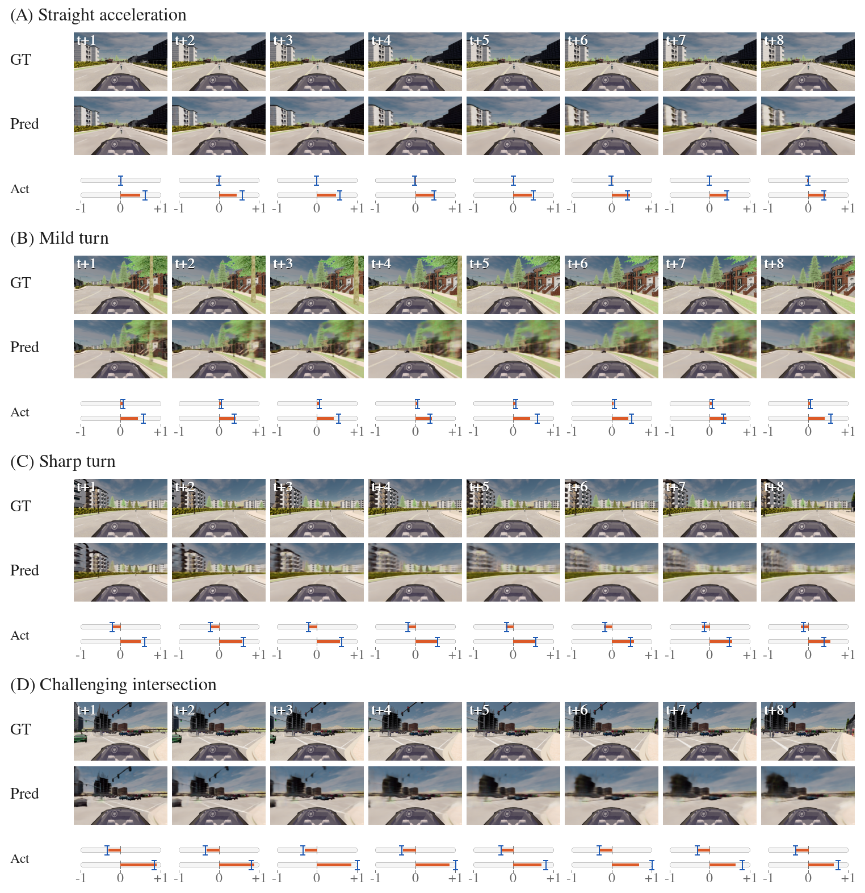
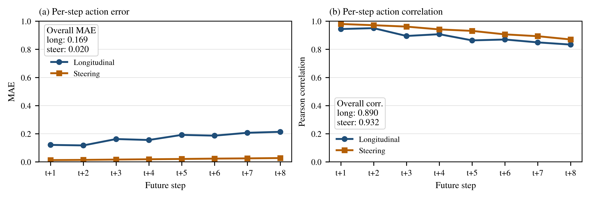

TeleopWM: A Real-Time Predictive World Model for Latency-Resilient Vision-Based Teleoperation
A lightweight predictive latent world model for real-time latency mitigation in vision-based teleoperation.
Demo Video
Research Overview
Problem. Vision-based teleoperation suffers from stale visual feedback under communication latency. TeleopWM predicts short-horizon future observations and action trends to support latency-resilient predictive display.
The main contributions of this work are summarized as follows:
- We propose TeleopWM, a lightweight predictive latent framework for latency-resilient vision-based teleoperation that jointly supports predictive display and future action forecasting.
- We introduce a motion-aware future action prediction strategy that estimates future driving behavior from latent motion dynamics rather than static latent appearance representations.
- We demonstrate that TeleopWM maintains lightweight real-time inference characteristics while producing stable predictive visual rollouts and multi-step future action forecasts under teleoperation-oriented constraints.
Method: TeleopWM Predictive World Model

Qualitative Rollout Results

Future Action Prediction

TeleopWM maintains strong steering correlation over the 8-step prediction horizon while longitudinal error increases gradually with horizon length.
Runtime and Key Metrics
| Category | Metric | Value |
|---|---|---|
| Rollout prediction | Horizon | 8 frames / approximately 533 ms at 15 FPS |
| Future action prediction | Outputs | longitudinal and steering trends |
| Runtime | Inference latency | 38.9 ms / rollout |
| Runtime | Prediction rate | 205.5 FPS |
| Runtime | Peak VRAM | 1.24 GB |
| Resolution | Input/output | 320x512 |
Runtime values are reference measurements from the final paper configuration and should be re-measured on target hardware.
Code, Data, and Checkpoints
Public release artifacts are hosted through GitHub and Hugging Face.
Documentation
Installation and environment preparation. DATASET.md
Dataset layout and metadata generation. TRAINING.md
Final model training workflow. EVALUATION.md
Rollout, action, and runtime evaluation. CHECKPOINTS.md
Checkpoint usage and compatibility notes. REPRODUCTION.md
End-to-end paper reproduction checklist. TROUBLESHOOTING.md
Common issues and fixes.
Citation
@misc{teleopwm2026,
title={TeleopWM: A Real-Time Predictive World Model for Latency-Resilient Vision-Based Teleoperation},
author={Khalil, Aws and Kwon, Jaerock},
year={2026},
note={Under review}
}